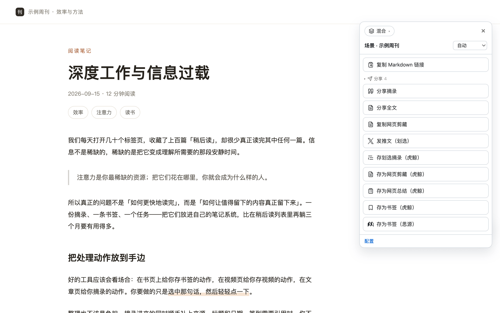
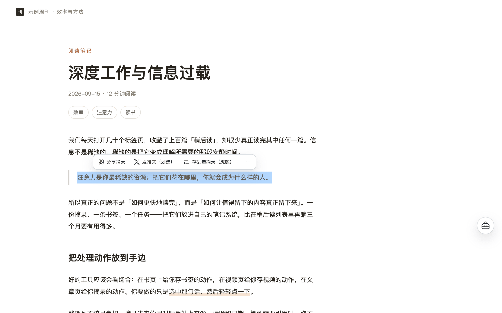
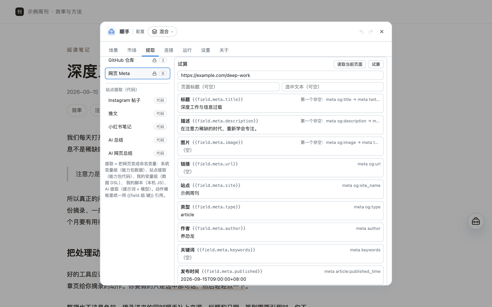
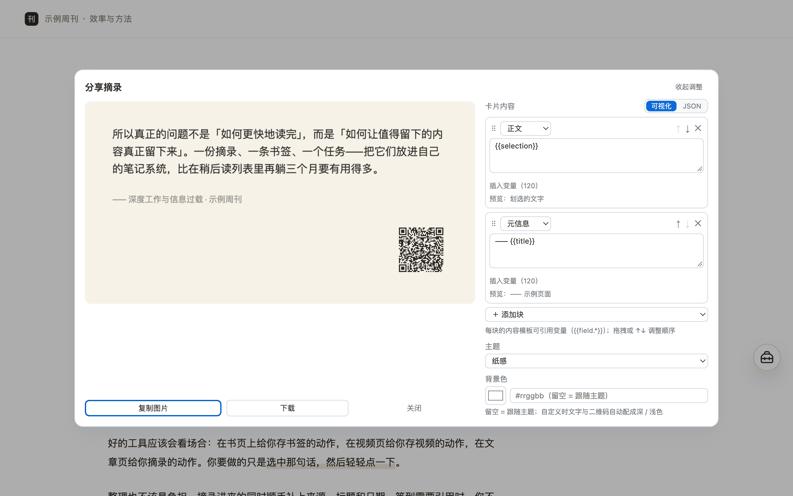
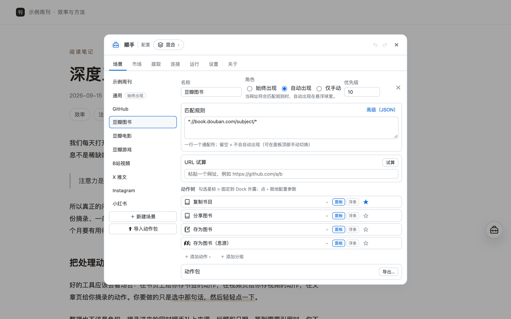

豆瓣 book · movie · game
- 书 17 / 影 20 / 游 11 个字段自动提取
- 复制信息、生成分享卡片
- 写进虎鲸 / 思源数据库
浏览器扩展 / 油猴脚本 · 桌面与手机 · Edge 已上架，Chrome 审核中
网页上的事，顺手就能做完。
把网页上的东西收进你自己的笔记——划词存摘录、整页剪藏（正文可自己点选，可存成本地 Markdown）、 豆瓣书影游元数据一键入库；也能出 Instagram / 小红书 版式的分享图， 划词就地翻译，顺手发推。动作、字段、模板都在配置台里改，不用写代码； 还能让动作在你打开对应网页时自己跑——点按钮、填输入框、等元素出现，甚至把页面元素截成图。
无账号 · 无服务器 · 配置与密钥只存本机

最常用的四件
每一件的字段、清洗规则与卡片版式都在配置台里可视化调整——改错可一键撤销。这四件只是开箱自带的，不是边界：下面那个气泡里跑什么，由你的提示词决定。
选区上方只列出真的用到划选的动作，通常两三个，多了收进 ⋯。点浮条不会清掉选区，滚动、点空白或按 Esc 即消失；不喜欢可以在设置里关掉，悬浮球照常可用。

内置站点规则覆盖豆瓣书影 / GitHub / B 站 / 微信公众号 / 少数派，其余网页走正文引擎自动识别主内容；被隐藏的内容（含广告拦截器藏掉的广告）不会进剪藏。
.md 文件，路径可写子目录与日期（如 顺手/2026-09-17/标题.md），直接放进 Obsidian / 思源库obsidian:// 深链、不经过服务器）；库内目录可配子目录，同名可追加 / 覆盖
帖子与笔记的图片会自动补全（含轮播），排成「图片墙」卡片；四种主题（纸感 / 墨感 / 品牌 / 纯白）与四种尺寸（长图 / 4:5 / 3:4 / 1:1），正文太长自动分页、不截断，右下角可带来源页二维码。

豆瓣的书 / 影 / 游页面各自解析出 17 / 20 / 11 个字段（含简介、集数、形式等），一次点击写进你自己的笔记软件——不用复制粘贴，也不用逐个填表。

划词浮出的那个小气泡，不是一个「翻译功能」，而是「文本结果就地显示」这个机制——翻译只是它的第一份配方。把提示词换成事实核查、逻辑判断、摘要、改写，就是另一件动作；同一个结果还能接着出图、发推（等你点头才跑）。
会看场合
上面那些事，在这些站点上都有现成动作。站点与匹配规则（网址）都能自己改，动作只在它该出现的地方出现； 想换整套工作流时切一个模式就行，不用逐个改动作。
owner/repo自动化
每个动作都能设成「自动运行」或「仅建议」——打开对应网页就替你跑，或只提醒你一下。默认关闭、逐个动作开启， 可设延迟、冷却与执行前询问；动作链里还能点按钮、填输入框、等元素出现，把页面元素截成图片。
豆瓣书 / 影 / 游页自动运行「存为电影 / 图书 / 游戏（思源）」——浏览即入库，一次点击都不用；想更稳就开着「执行前询问」，确认一下再写。
一个动作串起「点击『展开全文』→ 等待元素出现 → 复制网页剪藏」；折叠评论、懒加载长文都适用。
拾取站内搜索框，填写输入框引用划选内容——选中一段话点一下就填进去（React 受控搜索框也认）。
打开某个报表 / 后台页，把指定区域截成 PNG 保存；也能一次点选多块逐张导出，或竖着拼成一张长图。选择器在页面上「拾取」即可。
自动运行默认关闭、逐个动作开启；也可以只开「仅建议」，或设成执行前先问你。列进 「静默网站」的站点一律不自动触发（悬浮球仍可手动打开）；从「动作市场」装来的动作包 就算带自动运行，安装后也是关闭的——开不开永远由你决定。
还有
一个动作跑完接着跑下一步，主步骤成功后按顺序执行。例：存虎鲸书签，接着写一行思源数据库（一次点击，两个库都有）；存完顺手把「《标题》 链接」复制到剪贴板。步骤还能设成「等我确认」——不自动执行，而是在结果面上等你点（比如看完 AI 译文再决定要不要存进笔记）。
开箱的「翻译」就带两个这样的下一步：分享图（原文 + 译文）与发推（译文 + 链接）。
动作可以设成「打开对应网页就自动跑」，链条里还能点按钮、填输入框、等元素出现；选择器在页面上「拾取」即可。也能把任意元素截成图，多块还能拼成一张长图。默认关闭、逐个开启。
接你自己的 OpenAI 兼容模型（DeepSeek / OpenRouter / 硅基流动 / 本地 Ollama 都行）。提示词就是配置：{{content}} 交给模型，产出摘要 / 文案 / 关键词，再像普通变量一样用在任何动作里；开箱含划词翻译（划选 → 就地气泡显示译文）。不开启时完全不依赖 AI。
虎鲸（MCP）与思源（内核 API）：数据库 / 文档 / 日记 / 文档型数据库四种落点，缺列自动创建、写入前自动查重、图片自动本地化进笔记资源库。连接由你自己填，直连你的服务。
剪藏、分享图、正文都能保存成本地文件（Markdown / 文本 / 图片）。保存路径支持变量与子目录——比如 顺手/{{date:YYYY-MM-DD}}/{{title}}.md，直接放进 Obsidian / 思源库；同名自动编号，也可以选覆盖。文件只写进你自己的下载目录，不读、不列举你已有的下载记录。
装了 Obsidian 的话，把网页剪藏直接写进你的库——走 obsidian:// 深链交给 Obsidian 落盘，不经过任何服务器；库内路径支持子目录（如 顺手/{{date:YYYY-MM-DD}}/{{title}}），同名可追加 / 覆盖，写完默认不跳出笔记。
订阅官方目录，按标签或搜索安装别人做好的动作包；依赖与冲突有报告，可检查更新与卸载。动作包是纯数据（动作 / 提取规则 / 提示词），不含代码与密钥。
模式 / 场景 / 动作 / 变量组都是可视配置：改错 ⌘Z 撤销，可导入导出、可分享。字段来源支持选择器、「标签:值」、meta、JSON-LD、URL 正则、划选、模板与「依次尝试」，还能加变换链；内置变量含整页正文 / 剪藏 / 表格 / 剪贴板 / 运行时拾取。
会写 JS 的话可以为某个站点写一小段取数逻辑，入参 { url, title, selection, document }。只存本机、不进配置、不随导出与分享；默认不生效，需你自己在扩展详情页开启。
本地优先
写入笔记、调用模型都直接连你配置的地址，不经过作者。导出配置时不含任何密钥。
无广告、无埋点、无崩溃上报。动作使用记录与浏览足迹都只在本机，可随时关闭或清空，永不导出。
悬浮球与面板渲染在扩展自己的 Shadow DOM 里，不修改页面样式；剪藏的清洗只作用于页面副本。只有你在动作里明确配置了「点击 / 填写」这类网页操作时，它才会按你的选择去操作页面。
安装
到 Releases 下载最新的 shunshou-extension-*.zip，解压到任意目录（不要双击直接运行）。
地址栏输入 chrome://extensions（Edge 为 edge://extensions），打开右上角的「开发者模式」。
点「加载已解压的扩展程序」，选中解压目录。然后打开任意网页，看右下角。
Edge 商店已上架（去安装），装好即自动更新； Chrome 商店审核中，通过后同样换成商店安装。在那之前从 Releases 下载的版本一样能用； 有新版本时配置台「关于」页可以手动检查更新，重新加载一次解压目录即可，配置会保留。
不想装扩展、或在手机上用？先装一个脚本管理器——桌面 Tampermonkey / Violentmonkey； Android 用 Firefox for Android（或 Kiwi）；iOS 用 Safari 的 Userscripts。 再打开安装链接： 安装 shunshou.user.js， 脚本管理器会自动检查更新。 注入界面已适配手机：悬浮球点一下展开动作面板，钉住的动作常显，「页内配置」铺满屏幕； 个别桌面专属能力（浏览足迹只统计当前标签页、保存文件拍平子目录）会显式降级并说明。
常见问题
不要。顺手没有账号体系，装好就能用——开箱的「日常」模式零配置可用。
内容只在两处流动：你主动点的动作，以及你自己配置的笔记 / 模型服务。作者这边没有服务器，收不到你的任何数据。
配置与密钥存本机，导出的配置不含密钥。详见 隐私说明。
桌面是 Chrome / Edge 扩展（同一内核）；也可以装油猴脚本，在 Chrome / Edge / Firefox 桌面浏览器，以及 Android（Firefox for Android / Kiwi）和 iOS（Safari + Userscripts）上使用。免费使用，没有广告，也没有需要付费解锁的功能。
用你自己配置的 AI 连接（任何 OpenAI 兼容的模型服务：DeepSeek / OpenRouter / 硅基流动 / 本地 Ollama…）。顺手不自带翻译服务，也不经过作者——译文和网页内容只会发到你填的那个端点。
还没配连接时，「翻译」会收在面板底部的「未配置」区，配好自动出现；目标语言写在提示词里，开箱是简体中文。
不需要。动作、匹配规则、提取字段、内容模板都在配置台里可视化调整，改错可一键撤销。只有「本机脚本」是给会写 JS 的人留的逃生口，不用它也不缺什么。
自动运行默认关闭，要逐个动作开启；也可以只开「仅建议」，或设成执行前先问你——写入笔记这类有副作用的动作建议开着「执行前询问」。
列进「静默网站」的站点一律不自动触发，悬浮球仍可手动打开；自动运行只在你当前打开的匹配页面上执行，不做后台批量抓取。从「动作市场」装来的动作包就算带自动运行，安装后也是关闭的。
扩展：下载新版本的 zip，重新走一遍「加载已解压的扩展程序」即可，配置会保留。油猴：脚本管理器会自动检查更新，一般无需操作。新版本新增的默认场景 / 动作会在下次打开时增量补齐——你改过的不动，删掉的不会回来。
可以。加一条网址匹配规则、几个动作，就是一个新场景；想省事也可以从「动作市场」装别人分享的动作包，或把自己配好的场景导出成 .action-pack.json 发给朋友。